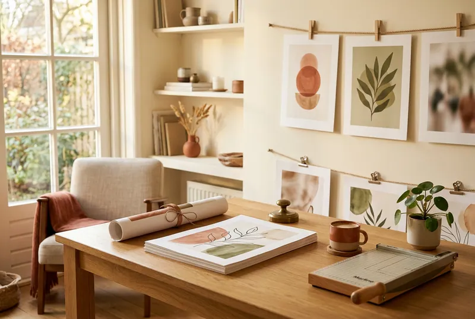
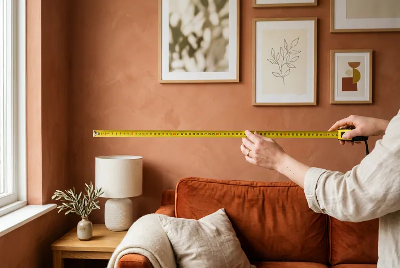
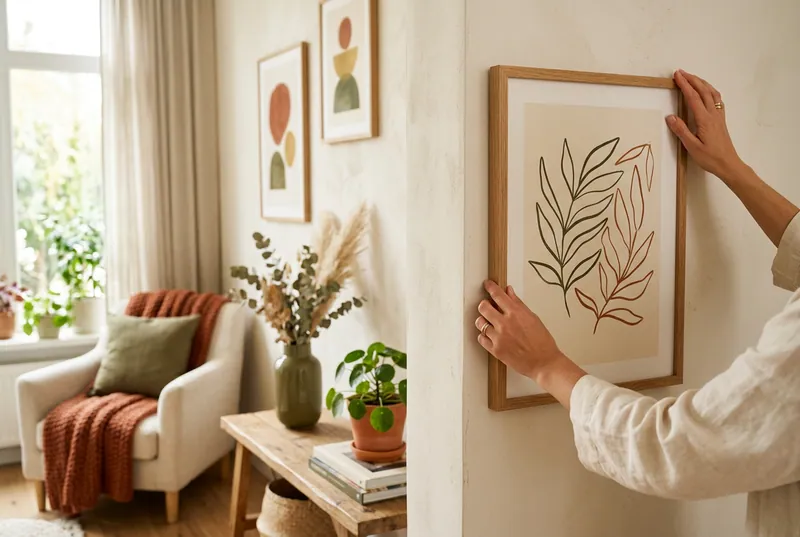
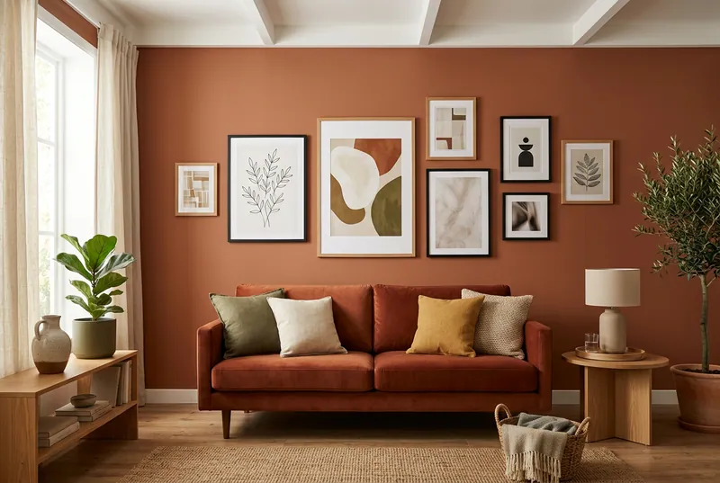
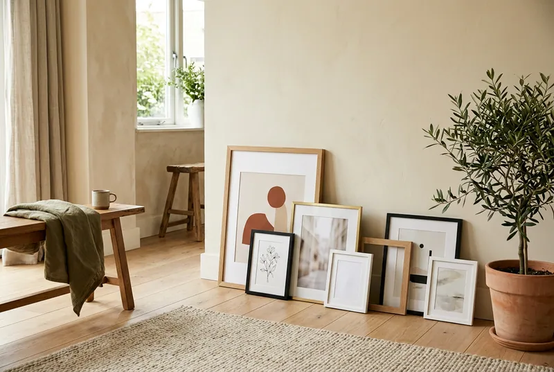

Tijger portret poster
vanaf € 14,99
2+1 gratis op alles, zonder code Gratis verzending vanaf €50 in NL en BE In huis binnen 3 tot 4 werkdagen
Nieuw: zie hem op je eigen muur
446 posters met lef en een glimlach. Bekijk ze ingelijst, op ware grootte, op je eigen muur.
De collectie waar het begon
Meesterwerken die iedereen kent, met een brutale knipoog. Het Meisje met de parel blaast kauwgom, het Melkmeisje schenkt champagne. Klassiek genoeg voor een strak interieur, eigenwijs genoeg om over te praten.
Bekijk de 34 postersKies je ruimte. Elke poster zie je daar op ware grootte.
De posters die het vaakst een muur krijgen.
vanaf € 14,99

vanaf € 14,99

vanaf € 14,99

vanaf € 14,99

vanaf € 14,99

vanaf € 14,99

vanaf € 14,99

vanaf € 14,99
Elke poster zie je op ware grootte, ingelijst, in een echte kamer.
★★★★★ 4.7 van 5 · 6 reviews
Voorbeeld: hier komen straks echte reviews van klanten (via Kiyoh)
“Hangt boven onze bank en iedereen die binnenkomt begint erover. Papier voelt stevig, kleuren zijn diep.”
Sanne uit Eindhoven
F*ck Pearls poster“Met de muurplanner eerst op een foto van mijn eigen muur gezet. Precies zo hangt hij nu.”
Mark uit Helmond
Tijger portret poster“Lief voor de babykamer. Binnen drie werkdagen in huis, netjes in een koker.”
Lotte uit Utrecht
 Safari dieren poster
Safari dieren poster“Drie besteld voor een fotowand, de derde was gratis. Ziet er echt uit als een galerie.”
Youssef uit Antwerpen
Meisje met kauwgom poster“Zwart-wit, strak en betaalbaar. Paste meteen in een standaard lijst van 50x70.”
Ilse uit Nijmegen
New York straat poster“Lachen elke ochtend bij het koffiezetten. Levering duurde een dag langer dan gedacht, verder top.”
Tom uit Breda
La Dolce F*cking Vita poster
Leuk is serieus werk
We kiezen posters waar je om moet glimlachen en die je na een jaar nog steeds mooi vindt. Een klassieker met kauwgom, een leeuw in een trui, een rustige zwart-wit foto. We drukken ze pas als jij bestelt, in Nederland. Geen voorraad, geen verspilling.
Lees ons verhaalKorte gidsen voor wie het in één keer goed wil doen.

01Kies een poster die ongeveer twee derde zo breed is als het meubel eronder. Zo vind je de juiste maat.
Lees de gids
02Plakstrips, een fotoplank of een houten posterhanger: vijf manieren zonder één gat in de muur.
Lees de gids
03Eén ankerposter, één kleur die terugkomt en overal dezelfde ruimte. Zo wordt het één geheel.
Lees de gids
04Kies een lijst met dezelfde maat als je poster. Plus: welke kleur, en glas of plexiglas.
Lees de gidsBinnen 3 tot 4 werkdagen. We drukken elke poster op bestelling, daarna gaat hij met PostNL of DHL naar je toe. Je krijgt een track-and-trace per mail.
Gratis vanaf €50 in Nederland en België, Daaronder betaal je €4,95.
Doe drie posters in je winkelwagen en de goedkoopste is gratis. Bij zes posters zijn er twee gratis, enzovoort. Je hoeft geen code in te vullen, de korting staat er vanzelf.
Nee, je krijgt de poster zonder lijst. Al onze formaten passen in standaard lijsten. In de gids 'Welke lijst past bij mijn poster' lees je welke maat je nodig hebt.
Van stevig, glad posterpapier dat kreuk- en scheurbestendig is en water afstoot. De kleuren blijven scherp. We drukken met 100% groene energie.
Ja, je hebt 14 dagen bedenktijd, vanaf de dag dat je de poster ontvangt. Meld je retour via info@leukeposters.nl en stuur de poster onbeschadigd terug. De retourkosten zijn voor jou. Je geld krijg je binnen 14 dagen terug. Posters op maat kun je niet retourneren, want die drukken we speciaal voor jou.
Nieuwsbrief
Meld je aan en krijg 10% welkomstkorting. Elke maand loten we onder alle aanmelders de prijs van de maand: 3 posters naar keuze in 50x70. Plus tips en nieuwe posters, ongeveer één keer per maand.
Hoi, ik ben Pim! Zal ik je helpen een poster te kiezen?
PimJe posterhulp. Vraag maar raak.